Solv WMS
Kural motorlu, SAP ile entegre depo yönetimi: el terminali, tablet ve ofis aynı programda.
Videoları bilgisayarda, büyük ekranda ve tam ekran izlemenizi öneririz.
-
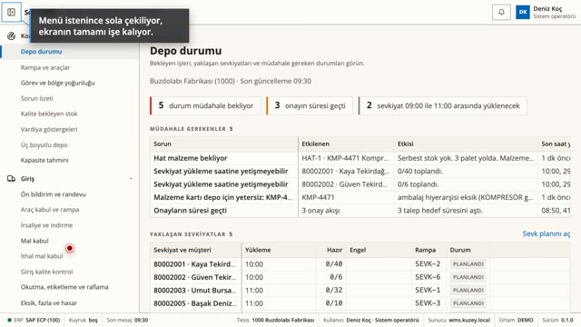
Genel bakış -
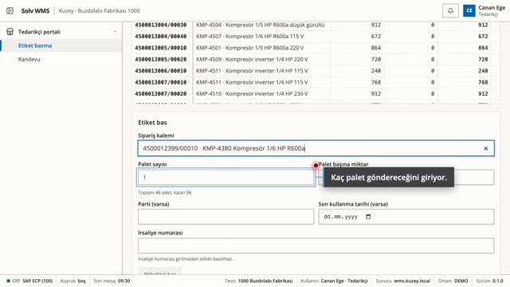
Tedarikçi portalı ve etiket Tedarikçi açık siparişini görür, irsaliye numarasıyla palet etiketini kendisi basar. -
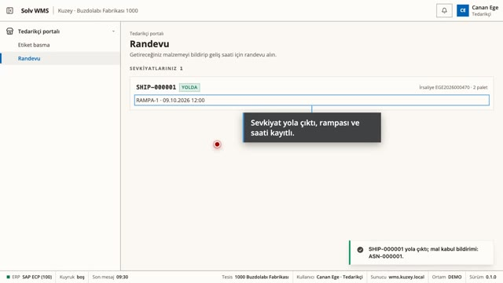
Randevu ve rampa Randevusuz sevk çıkmaz. Rampa takvimi, araç geldi, basılan etiket kabulde okunur. -
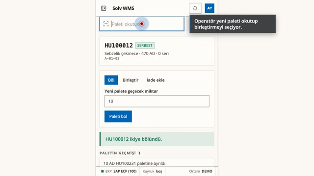
Palet aritmetiği Bölme, birleştirme, üretim iadesi. Her paletin izlenebilir geçmişi. -
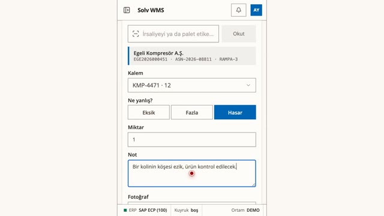
Eksik, fazla ve hasar tutanağı İrsaliye kalemine bağlı, notlu ve fotoğraflı tutanak. Çözümüyle kapanır. -
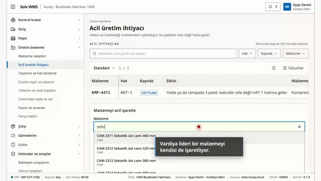
Acil üretim ihtiyacı Bayrak SAP planından gelir ya da elle konur. Elle konanı SAP verisi ezmez. -
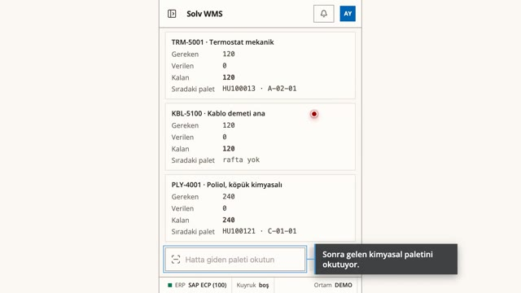
FIFO, FEFO ve son kullanma tarihi FIFO ve FEFO malzeme grubu başına kural setinde. Hat beslemede son kullanma tarihi yakın olan palet önce çıkar. -
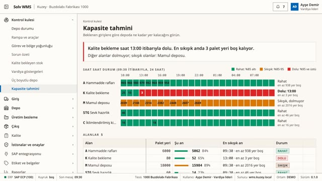
Kapasite tahmini Gelecek araçlar, planlı sevkiyatlar ve hat beslemesiyle alan alan, saat saat doluluk. -
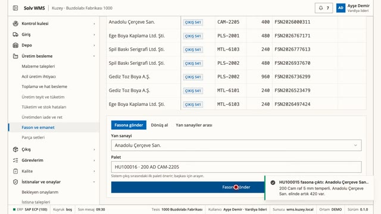
Fason ve emanet 541 çıkış, farklı kodla ve oranla dönüş, yan sanayiler arası aktarma, sonradan gelen irsaliye. -
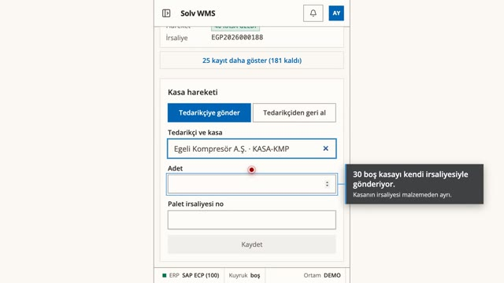
Boş kasa ve palet Çevrim sözleşmeli kasa havuzu. Kendi irsaliyesiyle giden ve gelen kasa. -
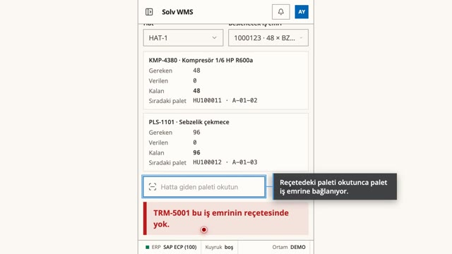
İş emri eşleştirme Hatta giden her palet bir iş emrine bağlanır. Tüketim ve izlenebilirlik iş emrinde. -
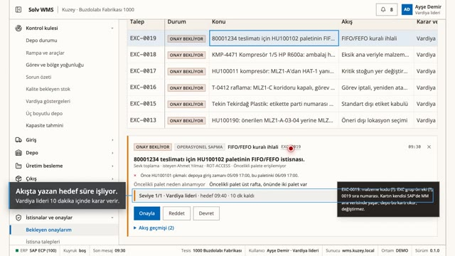
İstisna ve onay akışı Her istisna aynı motorla: rol bazlı onay seviyeleri, hedef süre, eskalasyon, sebep kodu, dijital form ve bildirim.
Demo ortamı: SAP bağlantısı, firmalar ve veriler kurgu. Menüde soluk görünen ekranlar kapsamda, bu demoda kapalı.
Solv · solv.com.tr